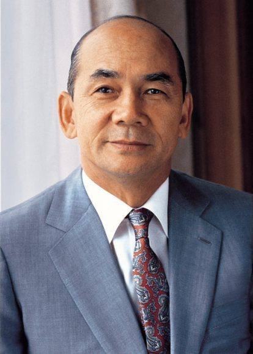

등록일 2020-01-29
제 1357호 (2019-10-24일자)
박태준, 일본에게서 배워 일본을 이긴 ‘철의 사나이’

1978년 중국의 딩샤오핑이 이나야마 요시히로 신일본제철 회장에게 중국에 제철소를 지어달라고 부탁하자 이나야마 회장은 이렇게 말했지요. “중국에선 불가능합니다. 공장은 지을 수 있지만, 중국에는 박태준이 없지 않은가요?”
1927년 오늘은 ‘철의 사나이’ 청암 박태준 전 포항제철 명예회장이 세상에 태어난 날입니다. 청암은 육군사관학교를 수석졸업하고 이화여대 정치외교학과 출신의 장옥자 여사와 결혼했는데, 부인의 첫 선물은 《경제학 원론》 책이었습니다. 이것이 징조였는지, 청암은 세계 경제의 거목이 됩니다.
청암은 육사 생도일 때 중대장으로, 나중에 1군단에서 상사로 모셨던 박정희 전 대통령이 믿었던 인재였습니다. 박 대통령은 5.16 군사정변을 일으켰을 때 “실패하면 가족을 책임져 달라”면서 거사 명단에 제외시켰을 정도로 청암을 신뢰했습니다. 박 대통령은 육군 소장을 예편하고 미국 유학을 준비하고 있던 청암을 불러서 대한중석(현재 워런 버핏이 이끄는 버크셔 해서웨이 그룹의 자회사인 대구텍)의 경영을 강권합니다. 청암은 1년 만에 적자기업을 흑자로 돌립니다. 1967년 박 대통령으로부터 ‘산업의 쌀’ 철강 산업을 맡으라고 지시받습니다.
그는 미국을 비롯한 세계 각국을 찾아다니며 지원을 요청하지만 퇴짜를 맞습니다. 세계은행은 채산성이 없다는 보고서를 써서 결정적으로 찬물을 끼얹습니다. 우리나라 철강 산업을 지원하겠다던 국제제철차관단도 투자에 난색을 표합니다.
청암은 고민을 거듭하다가 한일 국교정상화 배상금을 전용하자고 박 대통령을 설득합니다. 청암은 일본 정계와 제철업계 요인들을 끈질기게 설득해서 일본수출입은행 상업차관과 신일본제철의 기술지원을 받는 데 성공합니다. 당시 정치권에서는 배상금을 농업 지원이 아니라 성공 가능성이 불분명한 제철산업에 쓰는 것에 대해서 격렬하게 반대했습니다.
청암은 “조상들의 피 값인 대일청구권 자금으로 건설하고 있다. 공사를 성공하지 못하면 우리 모두 다 우향우해서 저 포항 앞바다에 빠져 죽자!”며 임직원들을 다독여서 1973년 6월 9일 포항제철 제 1 고로에서 첫 쇳물 생산을 완성했고 조업개시 6개월 만에 흑자를 달성했습니다.
청암은 제철소를 짓기 전에 사원주택단지부터 먼저 지어서 사방의 비난을 받았지만 “사원 복지 잘해서 망한 회사는 없다”고 밀어붙였습니다. 그가 부실공사 현장을 발견하곤 70% 진척된 공장을 다이너마이트로 폭파시킨 뒤 다시 짓게 한 일화도 유명합니다.
청암은 강하면서도, 열린 인물이었습니다. 포항공대를 설립할 때 초대 총장인 김호길 박사가 “지금은 포항제철 부설 대학이지만 나중에는 포항공대 부설 포철이 될 것”이라며 당시 사학법에서 재단이사장의 권한으로 규정된 부분까지 자신에게 달라고 하자, “초대 총장은 창업자과 같다”며 기꺼이 요구를 수용합니다. 1988년 한겨레신문이 창간되자 “우리나라에 이런 신문도 있어야 한다”면서 기업광고를 꾸준히 싣게 합니다.
청암이 박정희 대통령의 3선 개헌 지지성명서에 서명하지 않았을 때, 김형욱 중앙정보부장이 길길이 날뛰며 박 대통령에게 보고하자 “그 친구 원래 그래. 제철소 일 열심히 하도록 건드리지 마!”라고 한 것도 유명한 일화지요.
청암은 김영삼 전 대통령과 갈등을 빚다가 표적 수사를 받습니다. 포항제철 회장 직을 사퇴하겠다고 발표하자, 포항과 광양 시민들이 대규모 반대 시위를 한 것도 유명하지요. 김영삼 정부 때 수 백 억 원의 비자금을 조성했고, 30여 억 원을 횡령한 혐의로 기소됐고 일본에서 망명생활을 합니다. 그러나 퇴임 당시 포스코 주식은 단 1주도 없었다고 합니다. 2011년 세상을 떠날 때에 남은 재산은 젊었을 때 박정희 전 대통령으로부터 받은 북아현동 자택이 전부였고, 그나마 ‘아름다운 재단’에 기부했습니다.
청암은 1969년 세계은행에서 부정적 보고서를 썼던 존 자페를 나중에 만나서 이런 말을 듣습니다. “나는 그 때로 돌아가도 똑같은 보고서를 쓸 거다. 철강 수요가 없는 나라가 100만 톤짜리 제철소를 짓는 것이 말이 되는가? 내 실수는 박태준의 존재를 몰랐던 것이다. 당신이 상식을 초월하는 일을 하는 바람에 내 보고서가 엉망이 된 것.”
4차 산업 혁명의 기로에 놓인 2019년 대한민국, 누군가 상식을 초월하는 일을 할 수가 있을까요? 그런 일을 하려는 사람에게 박수를 칠 준비도 돼 있지 않은 듯한데…. 그래도 누군가 큰 뜻을 품고 온몸을 던지고 있겠지요?
기사원본: 코미디닷컴
(2019-10-24일자)
http://kormedi.com/1304238/%EC%9D%BC%EB%B3%B8%EC%97%90%EA%B2%8C%EC%84%9C-%EB%B0%B0%EC%9B%8C-%EC%9D%BC%EB%B3%B8%EC%9D%84-%EC%9D%B4%EA%B8%B4-%EC%B2%A0%EC%9D%98-%EC%82%AC%EB%82%98%EC%9D%B4/